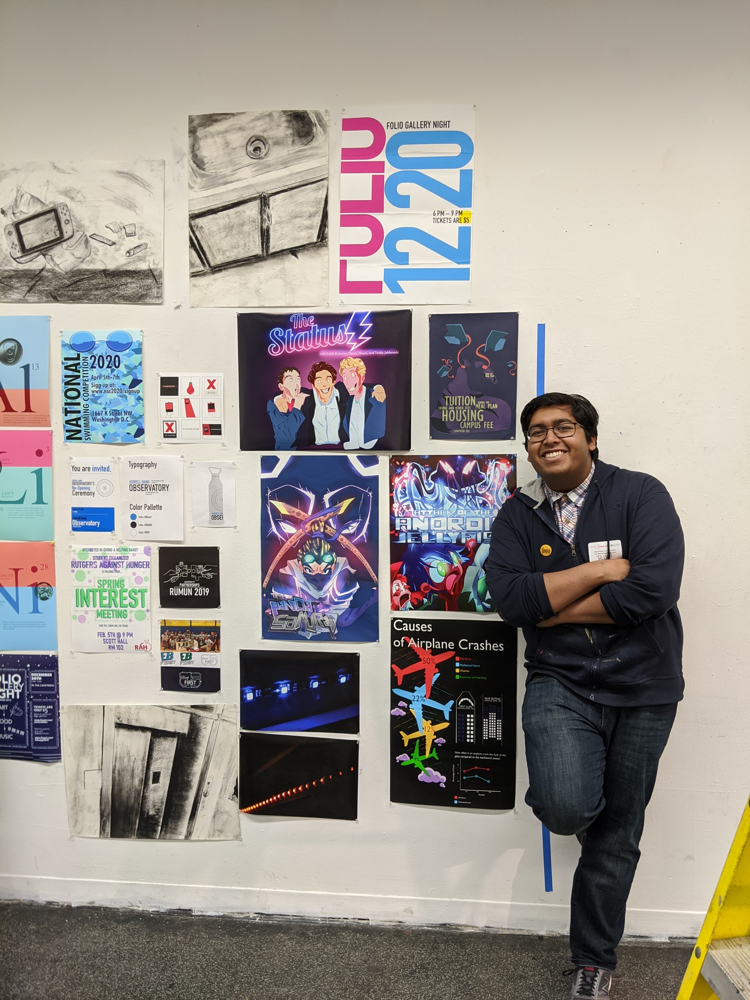

About Me.
Hi! My name is Pramit (Rik) Sarkar, and I am a graphic designer and an animator! I am a sophomore currently pursing a BFA in Design at Rutgers University in Mason Gross School of the Arts.
As a college student, I am very involved in clubs and organizations around campus. I am involved in the Institute for Domestic and International Affairs (IDIA), TEDx Rutgers, and Student Organized Rutgers Against Hunger (SORAH). From the minute I arrived to university, I wanted to keep myself active in the community and find a way to use my artistic abilities while constantly pushing my understanding about the world.
In my free time, I like to digitally draw cartoons and listen to music, and like to spend my Friday’s volunteering at a local soup kitchen known as Elijah’s Promise. I am also very invested in the idea of storytelling, and am constantly studying it and perfecting that skill. My biggest passion is animating and creating characters, and basing many of my stories and characters on aspects of my own life. Studying television and animation is a personal hobby of mine, as I one day aspire to launch an animated television show of my own. Until then, I like to push my boundaries in different facets of art. Through my different projects, I have achieved many of my skills through initiative and knack for self teaching. I look at art as an opportunity for exploration and understanding, and channel much of that mentality, into how I approach all my projects.
